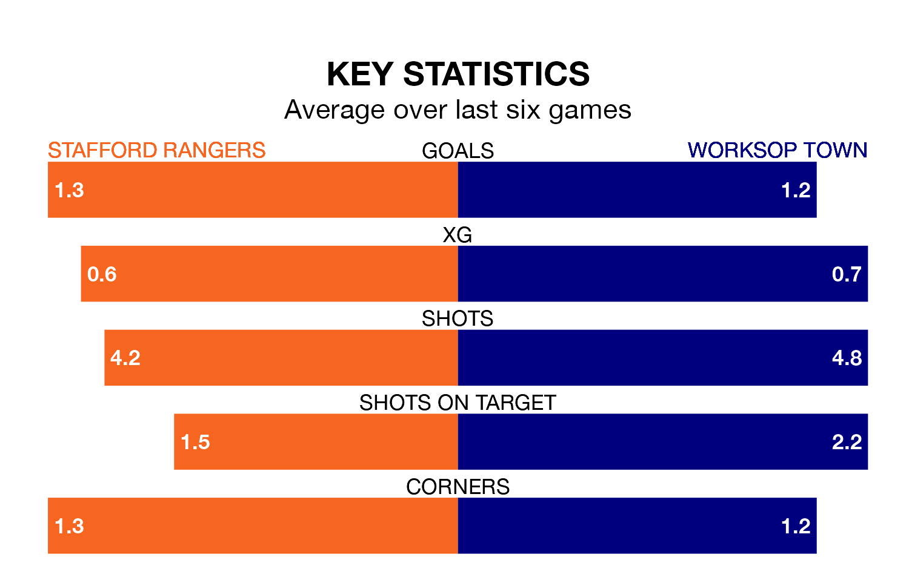

Stafford Rangers host Worksop Town on Saturday at Marston Road in Northern Premier League.
In their last league match, on January 13, Stafford lost to Marine 4-0 away.
Worksop also lost, 2-1 at home against Ilkeston Town.
With 27 goals in 26 games so far this season, Stafford are the league's joint-second-lowest scorers with 1.0 goals per game. And they are conceding more than average, letting in 58 goals at a rate of 2.2 per game.
Worksop, meanwhile, are above average scorers, with 2.1 goals per game, compared to a league average of 1.6. They have conceded 1.1 goals per game.
Rangers are 21st in the table after 26 games, of which they have won five and drawn two, earning 17 points.
Town are 16 places ahead of the home side in fifth, with 13 wins and five draws putting them on 44 points.
Stafford are in disappointing form in Northern Premier League, with two wins and four losses from their last six games.
With three wins and a draw over that period, the visitors' form is better – they have taken 10 points from 18, compared to Stafford's six.
Updated: 13:09 (UTC), 17/01/24